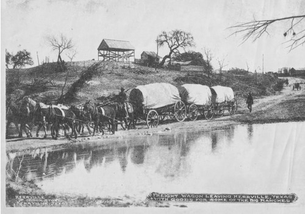

Stories and Narratives Stories and NarrativesJames Dowdy of Kerr County Texas |
|
Reproduced from: Early Settlers and Indian Fighters of Southwest Texas, By Andrew Jackson Sowell [google books]  FOUR OF THE DOWDY FAMILY KILLEDIn 1878 a man named James Dowdy moved to Kerr County and settled
on the Johnston fork of the Guadalupe River, two miles from the
home of Mr. Fessenden, who lived on Stockman's Creek, near the
Johnston fork. Before noon a band of Indians came upon the unfortunate children and killed every one of them. At the house that day it was the intention to eat an early dinner, and Richard and another young man present, who was engaged to Fanny, were to go and relieve the girls and the boy while they came to the house for their dinner. The meal was partaken of at 11 o'clock by the young men, and then they set out to hunt the flock of sheep. They soon returned, however, somewhat alarmed, and said they could not find the children, and that the sheep were badly scattered. The mother then hurried to the hills, and soon found her murdered children. Two of the girls, Alice and Killa, were lying together, Fanny 200 yards from them, and James some distance from her. All were in a horrible condition from bullet, lance, and arrow wounds, but none were scalped. A runner was sent for Mr. Fessenden, and he and Louis Nelson
came with a wagon and team and hauled the bodies home. Mrs. Fessenden
also went up there and helped to wash and dress the girls and
comb out their hair, and then sat up all night with them. All
were buried the next day. Many arrows were lying around on the
hillside where the victims ran and were pursued and shot at.
The Indians had a drove of horses, and came from towards the
Pedernales and went towards the head of the Guadalupe. Mr. Fessenden
and others followed the Indians, but so much time had been consumed
in getting in and burying the bodies that they were not overtaken.
Some are of the opinion that it was not Indians who did the murder,
but Mr. Fessenden was an old Indian trailer, and pronounced them
such from the sign they left. The Dowdy family were from Goliad
County. 1870 Goliad Co Texas Census = Goliad PO James Dowdy 52 farmer b GA
Pedigree on Worldconnect submitted by Stacey Rutledge 1. Balaam Dowdy b: 31 MAR 1777 in Chatham County,North Carolina
Sunset Cemetery photos sourced from this excellent website |
||||||